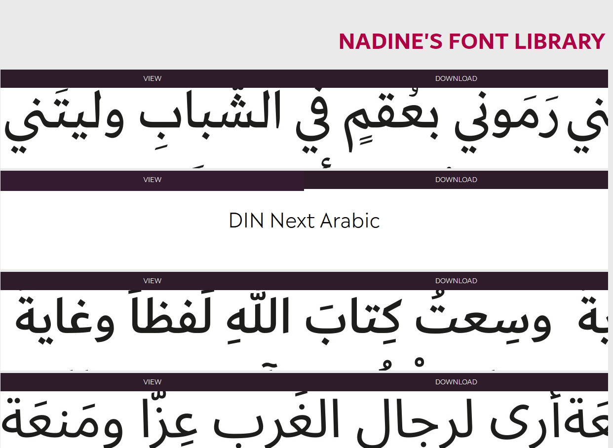

In Early 2019 I was given a challenge: make a website for a famous typographer - Nadine Chahine, specifically.
At first, I had no idea who that was, so I was thinking 'Oh boy, this is going to be a lot of work, isn't it? What have I gotten myself into?' After research, ideation and workshopping designs for a bit, I finally ended up with something I'm proud of, even years after.
Define
So before I was able to do anything, I had to go and find out who Nadine was and what made her so famous.
Nadine helped design the Dubai Font typeface - a font made specifically for the city of Dubai - by leading a team of designers and engineers and working on the typeface for over a year.
The Dubai Font was released automatically to Microsoft Office 365 and Office 2016 programs. Like Koufiya (another one of Nadine's fonts, it's one of her more famous ones), it has both Latin and Arabic characters and was commissioned by the Crown Prince of Dubai himself. Said Crown Prince also personally helped in the design process and pushed for government institutions in Dubai to accept and use the font.
So with this, I'd found out that Nadine was Arabic and primarily designs Arabic fonts, as well as worked with the Crown Prince of Dubai, which was cool as hell.
Ideate


As this was a few years ago, I was still just a baby UX designer, so I started in a digital drawing program rather than on paper. I figured that this way I could make boxes easier and I wouldn't have to physically take pictures or scans of what I was doing later. This sacrificed a bit of time, and yes, I have since transitioned to making paper prototypes first before I even open an XD file.
So after that, I liked the middle one best, but I felt that it needed a bit of tweaking to be something really good. It was at that point that I pulled out my notebook and a highlighter, because I'm pretty sure I had misplaced my pen the day before, and also because it allowed me to colour in large spaces quickly and get nice onion skin layers easily.
Anyway.
That first page was both a modification to the original landing page design and a place for me to dump all my colour choices. The ones after that were me workshopping ideas with myself as to what I wanted to display in terms of Nadine's fonts. I was originally thinking of having a separate page for all of them, but that was when I thought she only had Koufiya and the Dubai Font. I later discovered she had more than a few fonts so I had to rethink the ideas again. The joys of UX, huh?
Prototype & Test
For once, the coding part was one of the easiest, even with my decision to make everything right-aligned. Arabic is a right-aligned lexicon, so I figured it would only make sense to have Nadine's website be tastefully right-aligned as well.
Not everything is on the right - the body text is still on the left for reading and legibility purposes, and everthing else is middle or left aligned. It's really only her name in the upper left corner and any titles. It does lend a nice touch to what she does professionally, as well as spices up the typical 'website design' look.

The Final Piece
Once I had everything put together, I had a pretty decent website. It's basic and doesn't have very much to it, but back then I considered even finishing this an accomplishment. Honestly, I still consider it a decent website (enough that it's on my portfolio, even!). Looking back, I could have done a lot of things better, but I think we all say that when we look at past projects once we've learned some new skills.
It's a nice little website and I'm rather proud of it, which, tragically, is something I don't get to say very often.